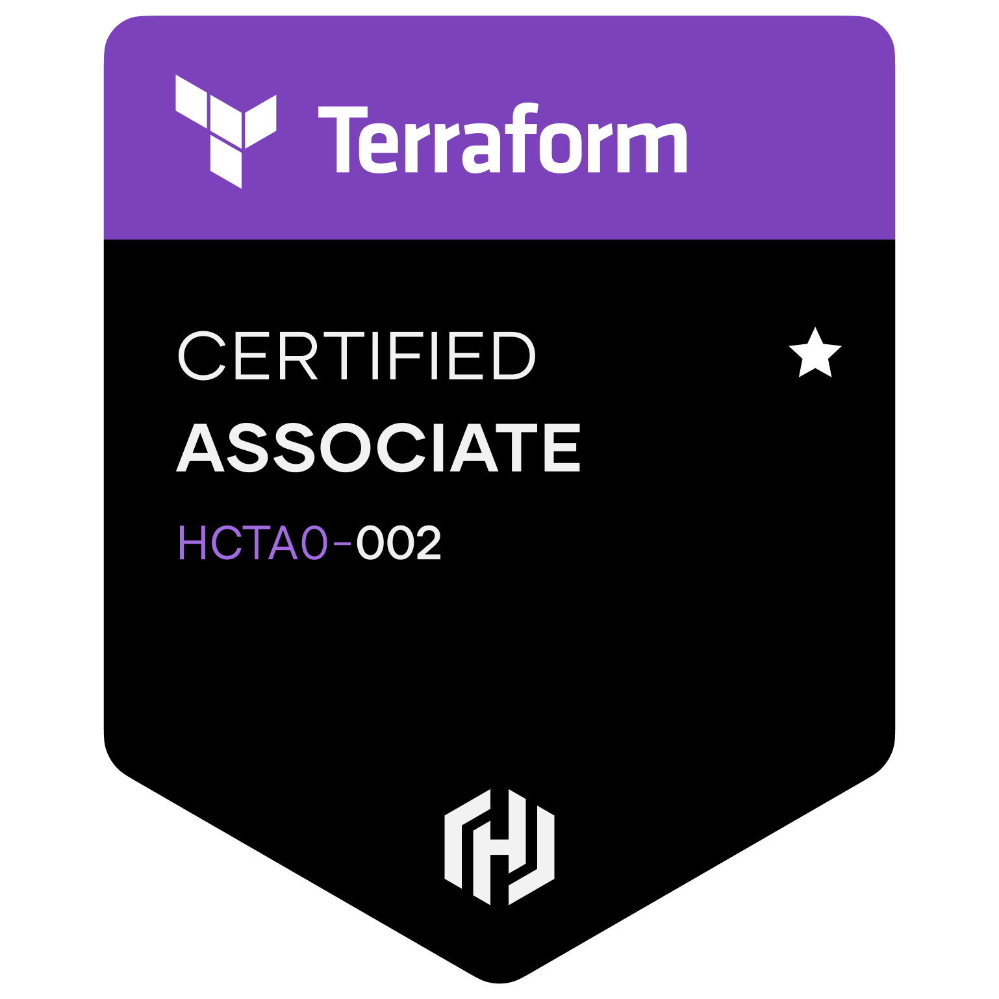
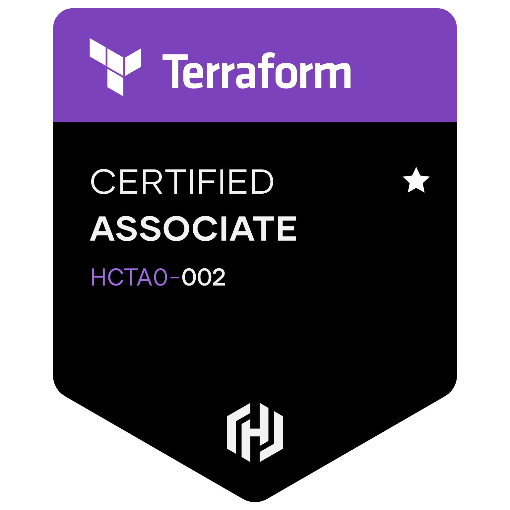
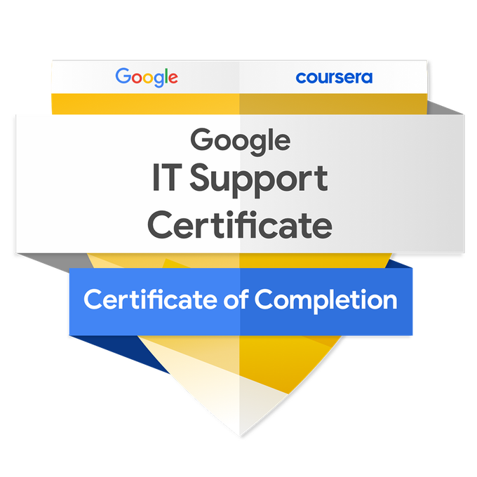
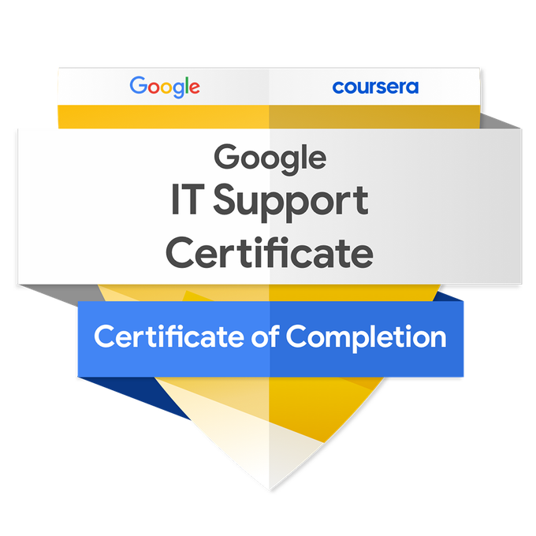

About Me
Cloud and software enthusiast with valuable computer programming skills. Together with a background in data analysis and two master's degrees, I offer a great blend of analytical thinking, research, and problem-solving skills.
Education
Computer Programming (CMPG) - Georgian College, Barrie, Ontario, Canada (2025 - Present)
Cloud Engineering - Digital Career Institute (DCI), Berlin, Germany (2023 - 2024)
MSc, Sustainable Mining & Remediation Management - University of Mining and Technology, Freiberg, Germany (2019 - 2023)
MSc, Marine Geosciences - University of Bremen, Germany (2014 - 2018)
Experience
Geodata Analyst Intern- Helmholtz Institute for Resource Technology, Freiberg, Germany
2022 – 2023
Relevant Skills
- Data Analysis & Programming: Python, Java, SQL, C#, C++, PHP, JavaScript, HTML, CSS, Linux (Bash), R
- DevOps & Cloud Technologies: Amazon Web Services (AWS), Microsoft Azure, Docker, Kubernetes, Terraform, GitLab CI/CD, Jenkins
- System Admin: Active Directory, Microsoft 365, PowerShell, Azure AD, User & Access Management
- Soft Skills: Leadership, Management Skills, Teamwork, Adaptability, Workplace Communication
- Language Proficiency: English (very fluent), German (intermediate), French (basic), Spanish (basic), Igbo (native)
- Others: Video Editing, Photography, Scriptwriting, Animation
Certifications
- Microsoft Certified: Azure Fundamentals
- AWS Certified Solutions Architect Associate
- Cisco Certified Network Associate (CCNA): Intro to Networks
- HashiCorp Certified Terraform Associate
- AWS Certified Cloud Practitioner
- Google IT Support Professional Certificate
- Machine Learning with Python - Enable AI, Stuttgart, Germany
- Basics of Data Analytics - Enable AI, Stuttgart, Germany
- Essential Management Skills - International Business Management Institute, Berlin, Germany
Badges

 

 

Projects
Most recent projects can be found on GitHub.